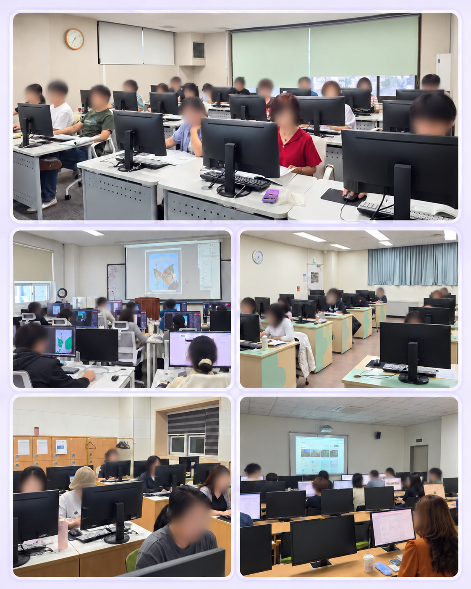

AI & 스마트 워크
생성형 AI를 활용한 콘텐츠와 업무 도구의 확장.
- ChatGPT · AI 리터러시
- AI 활용 PPT · AI 블로그
- 캔바 디자인 & AI 활용
HUMAN-CENTERED AI LEARNING
기술이 낯설어도 괜찮습니다.
생성형 AI부터 콘텐츠 제작까지, 함께 만드는 디지털 자신감.
01 / ABOUT
안녕하세요. 디지털 교육 강사 문경순입니다.
1990년 컴퓨터 교육을 시작으로, 평생교육 현장에서 다양한 학습자와 만나왔습니다. 컴퓨터 기초와 자격증부터 영상 제작, 디자인, 생성형 AI 활용까지 배움의 영역을 넓혀왔습니다.
처음 시작하는 분에게는 친숙한 첫걸음을, 실무에 활용하려는 분에게는 직접 써볼 수 있는 경험을 전합니다.
02 / LECTURE FIELDS
일상에서 시작해 실무로 이어지는
디지털 활용 교육을 소개합니다.
생성형 AI를 활용한 콘텐츠와 업무 도구의 확장.
나만의 이야기를 사진과 영상으로 표현하는 시간.
일상에 필요한 디지털 기술을 쉽고 친숙하게.
기초를 단단히 쌓고 업무에 바로 적용하는 실습.
LEARN WITH ME / 학습 채널
블로그와 유튜브에서 강사님을 만나보세요.
내 속도에 맞춰, 배움을 이어가는 공간입니다.
03 / EXPERIENCE
평생교육기관과 지역사회에서 이어온
주요 강의 경력입니다.

AI 유튜브 · 포토샵 · 엑셀 · 블로그
영상 · 포토샵 · 스마트폰 · AI와 블로그
유튜브 · 스마트폰 · OA · AI PPT · 1인 미디어
포토샵 · 유튜브 · 창업쇼핑몰 · OA
기초 OA · 멀티미디어 · 유튜브 · 디자인
컴퓨터활용능력 · 캔바 디자인 & AI
엑셀 실무 · ITQ · AI 활용 PPT
기초 OA · 업무활용 엑셀
컴퓨터 실무 · 포토샵 · ITQ · GTQ
OA · 자격증 · 블로그
04 / QUALIFICATIONS
BOOKS & RECOGNITION
성안당 「백발백중」 ITQ·GTQ·컴퓨터활용능력 시리즈, 「쉽게 배워 폼나게 활용하는」 시리즈 등 집필.
전국 정보화 경연대회
동영상 제작 부문 은상
05 / PROFESSIONAL ARCHIVE
자격과 집필, 나눔과 성장의 발자취.
입체 갤러리를 넘기며 살펴보고,
선택한 자료는 옆에서 자세히 확인하세요.
자료를 불러오는 중입니다.
아래 화살표로 자료를 탐색하세요.
드래그하여 회전 · 클릭하여 선택
검색 결과가 없습니다.
일련번호와 개인정보를 가린 열람용 자료입니다. 중복 자료는 통합했습니다.
LET’S LEARN TOGETHER
교육 대상과 관심 분야를 알려주세요.
강의 문의는 아래 이메일 또는 전화로 연락하실 수 있습니다.